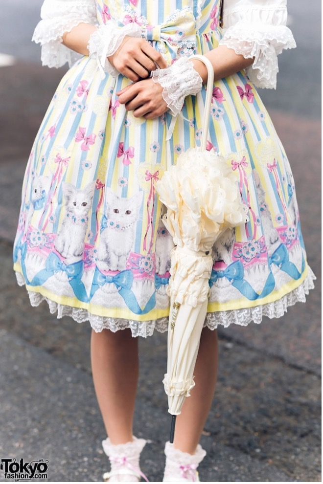
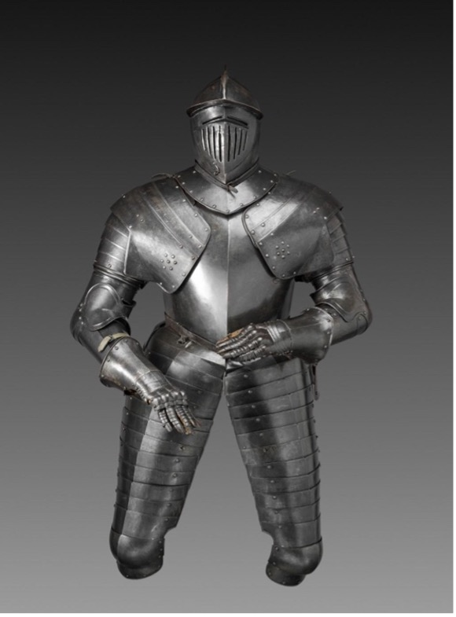

Lace is known to be a typical feminine material and also a fabric that represents both seduction and decency. White lace is often related to purity and new beginnings, used in wedding dresses and baby dresses.
Another example of using lace is in the Japanese Lolita subculture. Lolita is when an adult female dresses to conceal her mature body beneath garments made with lace, ribbons, ruffles, and bows to get away from norms of dominant Japanese culture. She poses and conducts herself in order to create a surreal and fantastic childlike appearance; and she communicates kawaii characteristics - hypercute and hyperfeminine - with her dress, poses, and mannerisms. In Lolita
fashion, lace is one of the most important elements to their dress, which was inspired from the dresses of a Victorian doll.
As a result, the Lolita subculture has been criticized for its lack of judgement, given that the aesthetic provokes the "Lolita complex" or rorikon - a sexual obsession or fetish directed toward young girls.
Wearing a school uniform in Asian countries is believed to solve discipline problems and help focus more on schoolwork. The school uniform always carries a student-like image of a youth. The school uniform in this project both symbolizes an inappropriate sexual attraction towards youths (Lolita complex), and my personal experiences with wearing a school uniform from high school. To elaborate on the explanation of the Lolita subculture, the images of Lolitas that we have in our mind often derive from the practice of cosplayers mimicking the dress of their favorite characters at anime and manga conventions, and this often has to do with school uniforms—especially school uniform of a schoolgirl. Even though Lolita cosplayers are not part of the Lolita subculture, this aesthetic also visually communicates hyperfeminine and hypercute characteristics through the use of kawaii(cute) objects. These hypercute, hyperfeminine characteristics can be interpreted and misinterpreted in various ways, complicating the consumption and commodification of the images they are dealing with. This commodification often has to do with aesthetic of “moe”—"a sense of intense attraction and contentment for things that have youthful, feminine attributes'' – and a glorification of youth in Asian cultures, which often leads to the focus of sexual attention from adult men, who are sexually attracted to younger girls.
Armor was worn during warfare. Its intention was to protect the soldier’s body from weapons that may be used against its wearer. Since it worked as a type of protection, armor is often used as a symbol functioning like a barrier or shield. However, the intention of armor was not only to protect, but also to show the social status of a wearer. “Decorated with gold and silver, etched and worked by the finest craftsmen of the day to the most extreme tolerances of the metal, armor was not only a practical item to be worn on the battlefield but also a wearable demonstration of wealth and power.”
Wearing a school uniform in Asian countries is believed to solve discipline problems and help focus more on schoolwork. The school uniform always carries a student-like image of a youth. The school uniform in this project both symbolizes an inappropriate sexual attraction towards youths (Lolita complex), and my personal experiences with wearing a school uniform from high school. To elaborate on the explanation of the Lolita subculture, the images of Lolitas that we have in our mind often derive from the practice of cosplayers mimicking the dress of their favorite characters at anime and manga conventions, and this often has to do with school uniforms—especially school uniform of a schoolgirl. Even though Lolita cosplayers are not part of the Lolita subculture, this aesthetic also visually communicates hyperfeminine and hypercute characteristics through the use of kawaii(cute) objects. These hypercute, hyperfeminine characteristics can be interpreted and misinterpreted in various ways, complicating the consumption and commodification of the images they are dealing with. This commodification often has to do with aesthetic of “moe”—"a sense of intense attraction and contentment for things that have youthful, feminine attributes'' – and a glorification of youth in Asian cultures, which often leads to the focus of sexual attention from adult men, who are sexually attracted to younger girls.
Armor was worn during warfare. Its intention was to protect the soldier’s body from weapons that may be used against its wearer. Since it worked as a type of protection, armor is often used as a symbol functioning like a barrier or shield. However, the intention of armor was not only to protect, but also to show the social status of a wearer. “Decorated with gold and silver, etched and worked by the finest craftsmen of the day to the most extreme tolerances of the metal, armor was not only a practical item to be worn on the battlefield but also a wearable demonstration of wealth and power.”